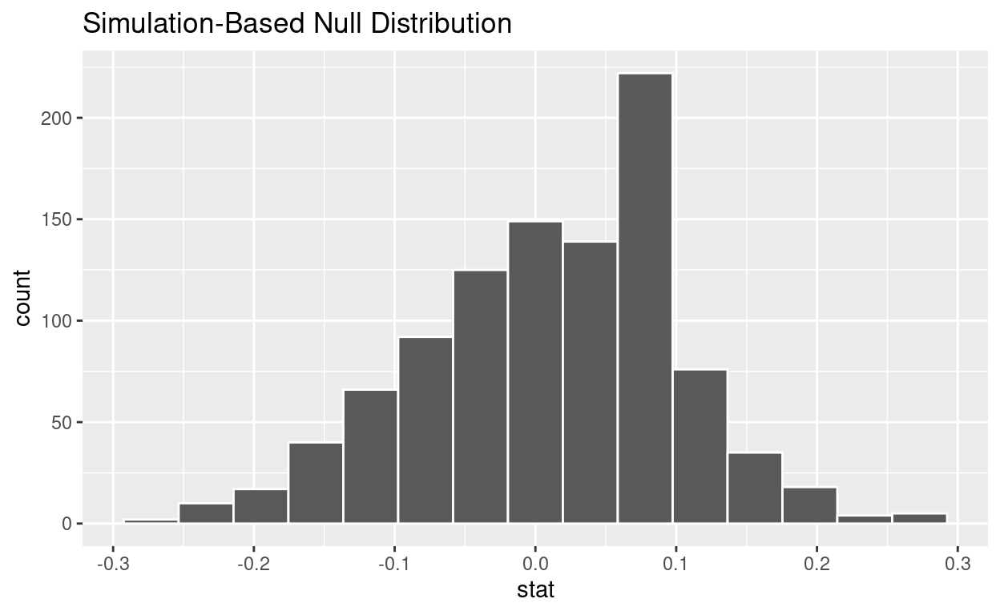

Introduction
In this session, we will get some initial practice in testing hypotheses by randomization. While this practice will not cover all the nuances of hypothesis testing in statistics, it will touch on many of the key ideas that we will see in different forms throughout the rest of the course.
In the first part, we will get a sense of how permutation works, and how it helps us to simulate what a sample might look like if the null hypothesis were true. Permutation is one way that we can use “randomization” to test a null hypothesis. In the second part, we will use permutation to test a more serious hypotheses about how different types of people might make decisions differently.
Generally, hypothesis testing requires us to follow a set of steps that we can outline like this:
- Translate the research question into null and alternative hypotheses, framed in terms of population parameters
- Use the data from the sample to calculate summary statistics corresponding to those population parameters
- Model what those summary statistics could have been if the null hypothesis were true
- Find the \(p\) value
- Form a conclusion
Did Kobe have a hot hand?
To get a handle on some of the big ideas in hypothesis testing in general, and of permutation in particular, let’s first look at a very special dataset. These data pertain to Kobe Bryant of the LA Lakers playing against the Orlando Magic in the 2009 NBA finals. Commentators at the time remarked that Kobe seemed to have a “hot hand”. In other words, they were claiming that once Kobe made a basket, he was more likely to make a basket on his next shot.
Check out the data
We have loaded into R a dataset called kobe that
consists of every shooting attempt Kobe made during that game, including
whether or not it went in (i.e., was the shot a “Hit” or a “Miss”):
head(kobe)Framing the hypotheses
We can translate the claim of the hot hand into a null hypothesis and an alternative hypothesis. For us to believe the “hot hand” claim, we first have to rule out the possibility that Kobe’s hit proportion is the same regardless of whether his previous shot went in or not. This possibility is the null hypothesis. The alternative hypothesis is that Kobe really had a hot hand and he made a greater proportion of hits after having already made a hit than after missing.
Summarize the data
Now that we’ve framed our hypotheses, let’s see whether our data suggest that we could reject the null hypothesis. We’ve already seen how to do this using a frequency table, like this:
kobe %>%
group_by(prev_shot, shot) %>%
summarize(n = n()) %>%
mutate(p = n / sum(n))## `summarise()` has grouped output by 'prev_shot'. You can override using the
## `.groups` argument.Here, prev_shot refers to whether Kobe’s
previous shot was a hit (“prev_H”) or a miss (“prev_M”).
The final column p gives us the proportions of Hits (“H”)
or Misses (“M”) following either a Previous Hit or Previous Miss.
We could use the proportions in the final column to calculate by hand
the difference between the proportion of Kobe’s made shots
(Hits) following either a hit (prev_H) or a
miss (prev_M). But we can use R to do this work for us
using a chunk like this one:
kobe %>%
specify(shot ~ prev_shot, success = "H") %>%
calculate(stat = "diff in props", order = c("prev_H", "prev_M"))The chunk works like this:
- Tell R the name of the dataset we are working with
(
kobe). - We
specifywhich variable is the explanatory variable (prev_shot) and which variable is the response variable (shot). We do this using the same squiggly thing we used for linear regression ([response variable] ~ [explanatory variable]). Because the response variable is a binary (i.e., two-level) categorical variable, we also need to tell R that a “success” is a Hit (abbreviated “H”). - Tell R to
calculatea particular summarystatistic. By sayingstat = "diff in props"we are telling R that we want to calculate adifference inproportions. Because we already told R that our response variable isshotand a success is aHit, R knows that we want to calculate a difference in the proportion of shots that were hits. By sayingorder = c("prev_H", "prev_M"), we tell R that we want that difference calculated in a specific order. In math shorthand, we could write it \(\hat{p}_{\text{Prev. H}} - \hat{p}_{\text{Prev. M}}\).
This may seem like a lot, but remember that computers needs to be told everything in detail. We can’t trust a computer to figure out anything on its own (yet?). Moreover, we will see that these lines of code can be “remixed” in various ways that will be very convenient for us as we go.
Exercise 1
- The following chunk of code changes the
successsetting from"H"to"M". Describe the result this code gave us and why.
kobe %>%
specify(shot ~ prev_shot, success = "M") %>%
calculate(stat = "diff in props", order = c("prev_H", "prev_M"))- The following chunk of code changes the
ordersetting, but puts thesuccesssetting back to"H". Describe the result this code gave us and why (note that the reason is different from the one in part [a] of this exercise!).
kobe %>%
specify(shot ~ prev_shot, success = "H") %>%
calculate(stat = "diff in props", order = c("prev_M", "prev_H"))Simulating a possible dataset if the null were true
If the null hypothesis were true, whether Kobe does or does not make a shot should not depend on whether he did or did not make his previous shot. We can model what Kobe’s performance would look like if this null hypothesis were true. To do this, we treat Kobe’s shooting history as if it were random. If the null hypothesis were true, we should be able to randomly permute Kobe’s shooting history without changing the overall relationship between Kobe’s previous shots and his current shot. By “overall relationship”, we mean the difference in proportions that we just calculated. If the null hypothesis were true, the difference in proportions from our permuted data should not be too different from the difference in proportions in our actual data. On the other hand, if the null hypothesis were false, the difference in proportions in the permuted data should be very different from what we actually saw.
We can use R to permute Kobe’s shot history and thereby model how
Kobe’s shots might have gone if the null hypothesis were true.
To do this, we need to specify the relevant variables as
well as the hypothesis. Let’s see that all at once, then
unpack it:
kobe_simulated <- kobe %>%
specify(shot ~ prev_shot, success = "H") %>%
hypothesize(null = "independence") %>%
generate(reps = 1, type = "permute")In the first line, the phrase kobe_simulated <- tells
R to store the result under the name kobe_simulated.
In the second line, we use that same specify
line we already used.
The third line is how we tell R what our null hypothesis is, namely, that the explanatory and response variables are independent (not associated).
Finally, the fourth line generates a simulated dataset
by randomly permuting—that is, shuffling—the
columns of the original data containing the explanatory and response
variables. We’ll see the function of the reps = 1 setting
momentarily.
Exercise 2
Find the difference in proportions (\(\hat{p}_{\text{Prev. H}} - \hat{p}_{\text{Prev. M}}\)) that you found in the previous exercise, but for the simulated data we just created. Hint: you can copy-paste much of the previous code; only one line will be different!
Compare the difference you just calculated (from simulated data) to the difference you calculated from the actual data in the previous exercise. Do they seem similar or different? Speculate about what this might tell us about whether the null hypothesis is true or not.
Simulating many possible datasets if the null were true
All we did was simulate one possible way Kobe’s shots could have turned out if the null hypothesis were true. There are many possible ways Kobe’s shots could have turned out, and each of these corresponds to a different random permutation of Kobe’s shot history. It’s a good thing that computers are good at repetitive tasks, because we can use the computer to repeat the random permutation process many times to simulated many possible datasets.
The next chunk of code generates 1000 different simulated datasets by
randomly permuting Kobe’s shot history. We tell R to remember these all
under the name kobe_many_simulations.
kobe_many_simulations <- kobe %>%
specify(shot ~ prev_shot, success = "H") %>%
hypothesize(null = "independence") %>%
generate(reps = 1000, type = "permute")Here’s a glimpse of the result:
head(kobe_many_simulations)The “replicate” column is a number from 1 to 1000 that labels each
simulated dataset. But this is still not super helpful, since we have to
calculate the difference in proportions for each of those thousand
simulated datasets. Fortunately, R gives us an easy way to do that by
adding a line called calculate at the end of our chunk:
kobe_null_distribution <- kobe %>%
specify(shot ~ prev_shot, success = "H") %>%
hypothesize(null = "independence") %>%
generate(reps = 1000, type = "permute") %>%
calculate(stat = "diff in props", order = c("prev_H", "prev_M"))We have now labeled the result kobe_null_distribution,
and the result looks like this:
head(kobe_null_distribution)Again, the “replicate” column is a label for each simulated dataset, and the new “stat” column is the difference \(\hat{p}_{\text{Prev. H}} - \hat{p}_{\text{Prev. M}}\) for each simulated dataset.
We can now make a histogram to examine the distribution of differences in proportions that result when the null hypothesis is true:
kobe_null_distribution %>%
visualize()
Find the \(p\) value
Remember that the \(p\) value is the proportion of simulated datasets which are at least as extreme as our actual data. In this case, that means the proportion of simulated datasets with a difference in proportions that is bigger than what we observed. Let’s tell R to remember that difference by running the chunk of code below:
kobe_obs_diff <- kobe %>%
specify(shot ~ prev_shot, success = "H") %>%
calculate(stat = "diff in props", order = c("prev_H", "prev_M"))Now, let’s see how many simulated datasets were bigger than this. In
the following line of code, we have to tell R that the observed
“statistic” (obs_stat) is the difference we just told it to
remember (kobe_obs_diff) as well as the fact that we are
interested in how many simulations produced results that were “greater”
than what was observed:
kobe_null_distribution %>%
get_p_value(obs_stat = kobe_obs_diff, direction = "greater")Finally, it will help to visualize where the observed difference
falls relative to the distribution of differences from our simulated
data (note that this uses shade_p_value rather than
get_p_value):
kobe_null_distribution %>%
visualize() +
shade_p_value(obs_stat = kobe_obs_diff, direction = "greater")The red line is the value that was actually observed and the parts of the histogram that are shaded pink represent the simulated datasets that were “more extreme” than what was observed.
Form a conclusion
Remember that we were testing the null hypothesis that Kobe did not have a hot hand. We only reject the null hypothesis if our data would be very unlikely if the null hypothesis were true, i.e., if the \(p\) value is low. Assume we adopt a significance level of 0.05, so we would reject the null hypothesis if the \(p\) value were less than this level.
Exercise 3
Do you reject the null hypothesis? Explain your reasoning. What does your conclusion say about whether or not Kobe had a “hot hand”?
Do people on the autism spectrum make more consistent choices?
The kind of hypothesis testing we just did for the fun case of Kobe’s hot hand is the same as what we use to answer more serious research questions.
Autism is a condition that has many facets. Individuals with autism who do not have any cognitive impairments often have different cognitive “styles”. In particular, it is thought that people with autism are more “detail-oriented”. This can be a detriment when trying to find a general pattern, but it might be a benefit in situations where there are many irrelevant distractions.
This potential benefit was studied by @FarmerEtAl2017. Their experiment included a group of participants diagnosed as being on the autism spectrum (with no cognitive impairments) as well as a group of neuro-typical controls. They looked at participants’ choices between pairs of consumer products that were presented alongside a third, less desirable “decoy” option. A “rational” choice should not be affected by the presence of this decoy, but in fact people are often swayed by those irrelevant options. Might people with autism make choices that are more consistent—more “rational”—because they ignore the irrelevant decoy?
For the rest of the lab, you will conduct a hypothesis test to address this question. It will follow the same basic outline as the procedure we followed to address the “hot hand” question, so be sure to refer to the previous section for guidance.
Check out the data
The relevant data are stored in R under the name
asc_choice. Here’s what the first few rows look like.
head(asc_choice)The response variable is Choice, which
is either “Consistent” (if the participant’s choice was not affected by
the decoy) or “Inconsistent” (if the participant’s choice was affected
by the decoy).
The explanatory variable is Group,
which is either “ASC” (for “Autism Spectrum Condition”) or “NT” (for
“Neuro-Typical” control).
Framing the hypotheses
Our research question is, “is the proportion of consistent choices higher for participants from the ASC group than those from the NT group?”
Exercise 4
What are the null hypothesis and alternative hypothesis that correspond to this research question?
Summarize the data
The next step is to construct a frequency table so we can know what the proportions of consistent choices were for each group and then find the difference.
Exercise 5
Find the difference in proportions of consistent choices between the autism spectrum group (ASC) and neuro-typical control group (NT). For guidance, check out how we did it in the Kobe example above. Be sure to note:
- What is the name of the relevant dataset?
- What are the names of the explanatory and response variables?
- A “Consistent” choice counts as a “success”.
- For the difference in proportions, we want to look at ASC minus NT.
___ %>%
specify(___ ~ ___, success = "___") %>%
calculate(stat = "___", order = c("___", "___"))Is the difference you found more consistent with the null hypothesis or with the alternative hypothesis? Explain your reasoning.
Model the null hypothesis
If the null hypothesis were true, a participant’s choice shouldn’t depend on which group they are in. In the Kobe example, we modeled the null hypothesis by randomly permuting Kobe’s shot history, since that was the explanatory variable. In this research scenario, group is the explanatory variable. So by randomly shuffling participants between groups, we can simulate how the data would look if the null hypothesis were true.
Exercise 6
Fill in the blanks in the code below to simulate 1000 datasets
assuming the null hypothesis were true, then produce a histogram (using
the visualize function) of the resulting simulated
differences in proportions. You’ll re-use a lot from the last
exercise!
- What is the name of the relevant dataset?
- What are the names of the explanatory and response variables?
- A “Consistent” choice counts as a “success”.
- We want to do 1000 simulations.
- For the difference in proportions, we want to look at ASC minus NT.
asc_null_distribution <- ___ %>%
specify(___ ~ ___, success = "___") %>%
hypothesize(null = "___") %>%
generate(reps = ___, type = "permute") %>%
calculate(stat = "___", order = c("___", "___"))
asc_null_distribution %>%
visualize()Once your code is working correctly, try clicking “Run Code” or “Submit Answer” a few times. a. Explain in your own words why the resulting distribution does not look the same each time. b. Based just on looking at the histogram (no need to do any calculations), describe what aspects of the distribution seem to stay the same and which seem to differ each time you run your code. Note things like the shape of the distribution (number of modes and skewness), central tendency, and variability.
Find the \(p\) value
To find the \(p\) value, we first
need to get the observed difference in proportions and tell R to
remember it with the label asc_obs_diff.
Exercise 7
Fill in the blanks below to find the observed difference in
proportions in the actual data and tell R to remember it under the label
asc_obs_diff. This value is then used to calculate the
\(p\) value. Hint 1: for the
direction, remember that this should correspond to the
alternative hypothesis (“less”, “greater”, or “two-sided”). Hint
2: see what you wrote in the previous exercise, there’s a lot you
can reuse!
asc_obs_diff <- ___ %>%
specify(___ ~ ___, success = "___") %>%
calculate(stat = "___", order = c("___", "___"))
asc_null_distribution %>%
get_p_value(obs_stat = asc_obs_diff, direction = "___")Form a conclusion
Finally, we are in a position to visualize where the observed difference in proportions falls relative to the differences that would be expected if the null hypothesis were true. This will enable us to form a conclusion about what these data tell us about our research question.
Exercise 8
Fill in the blanks in the code below to visualize where the observed difference in proportions falls on the distribution of differences that would be expected if the null hypothesis were true (hint: look back at previous exercises, you’ll be able to re-use a lot!)
___ %>%
visualize() +
shade_p_value(obs_stat = ___, direction = "___")Based on our analyses, would you reject the null hypothesis? Explain your reasoning, being sure to state a reasonable significance level. What does your conclusion say about whether participants with a diagnosis of autism made more consistent choices than neuro-typical participants?
Wrap-up
In this session, we got practice using R to perform hypothesis tests using randomization. Specifically, we used a type of shuffling called permutation. Shuffling allows us to simulate various ways that a particular dataset could look like if the null hypothesis were true. We then found the \(p\) value and visualized the null distribution in order to get a sense of whether our actual data would be unlikely if the null hypothesis were true.